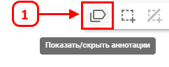
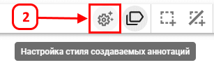
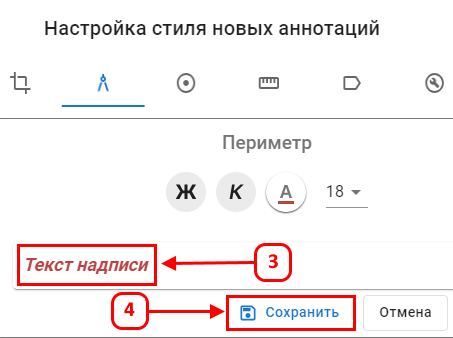

Настройка стиля создаваемых аннотаций
Функция позволяет пользователю изменять внешний вид текста аннотаций.
Настройка стиля аннотаций:
- Нажмите (1) для открытия аннотаций.

- Нажмите Настройка стиля создаваемых аннотаций (2).

- Выберите параметры стиля, такие как курсив, жирный шрифт, размер и цвет.
- Используйте (3) для предварительного просмотра изменений.

- Изменения применяются к примеру текста в реальном времени, что позволяет увидеть, как будет выглядеть аннотация.
- Сохраните изменения, нажав (4), чтобы применить стиль к новым аннотациям.
После сохранения новые аннотации будут отображаться с заданным стилем, улучшая их восприятие на карте.